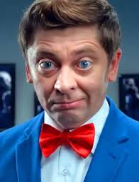

Photo
Personal Information
Age: 28
Gender: Female
Interests: Technology, Photography, Travel
Hobbies: Hiking, Painting, Reading Sci-Fi novels
Skills and Interests
- Web Development (HTML, CSS, JavaScript)
- Graphic Design (Photoshop, Illustrator)
- Photography (Portrait and Landscape)
- Public Speaking and Leadership
- Fluent in English and French
Essay
I am a creative individual with a passion for technology and the arts. Over the years, I’ve developed a unique blend of skills that span across web development, graphic design, and photography. I love expressing myself through digital and visual mediums, and I am always eager to learn new technologies. My love for the outdoors inspires my photography, and when I’m not coding or designing, you can find me hiking or capturing landscapes with my camera. Fluent in both English and French, I also enjoy connecting with diverse cultures. My goal is to continue growing both personally and professionally, combining my tech skills with my creative interests to create innovative solutions that inspire others. I believe that with hard work, creativity, and perseverance, there are no limits to what we can achieve.